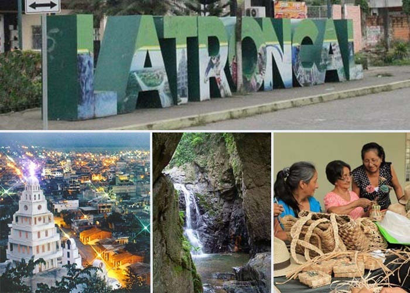

Informacion General
La Troncal, anteriormente conocida como Rircay, es un cantón de Ecuador que alberga a aproximadamente 70,000 habitantes. Se sitúa en la región 6 del centro-sur del país, en la costa de la provincia de Cañar, en la ruta vial (La Y) que conecta Guayaquil, Cuenca y Machala. Este encantador poblado ha crecido gracias a la agricultura de caña de azúcar, de la cual se ha convertido en un ícono, albergando uno de los ingenios azucareros más productivos del país. Ecuador es un paraíso turístico, y La Troncal destaca por su impresionante belleza natural, que se puede apreciar en sus balnearios de aguas termales, rodeados de majestuosas montañas, ríos y cascadas. Además, cuenta con una variedad de opciones de hospedaje y recreación, todo en armonía con la exuberante flora y fauna silvestre que la rodea.
Imagen destacada
Esta imagen representa a mi ciudad.
Video destacado
Este video mustra un recorrido del lugar.